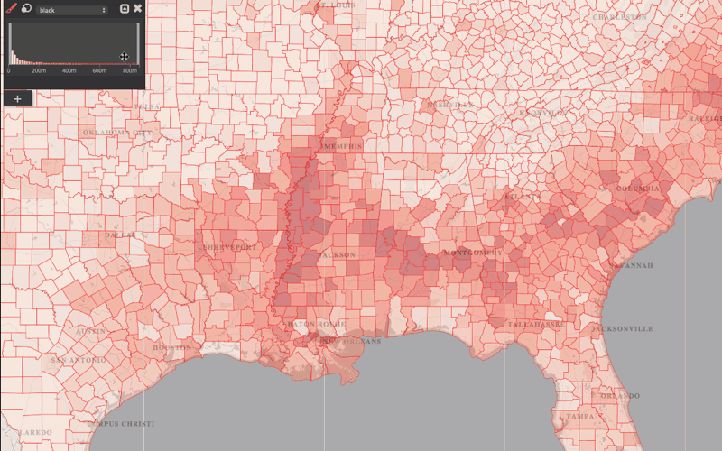
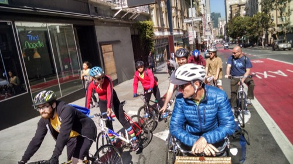
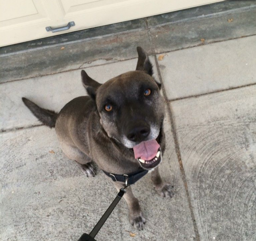
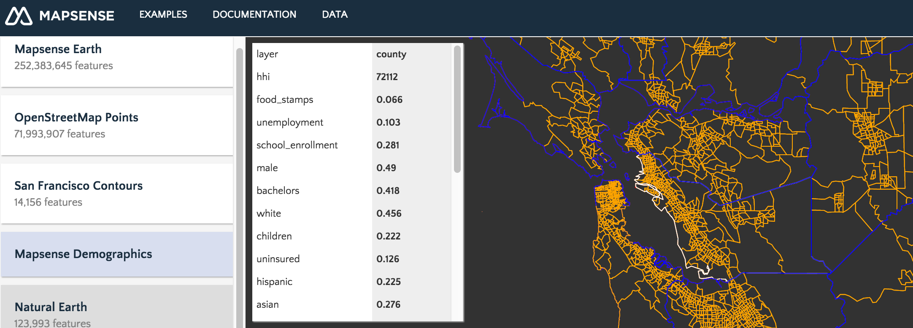
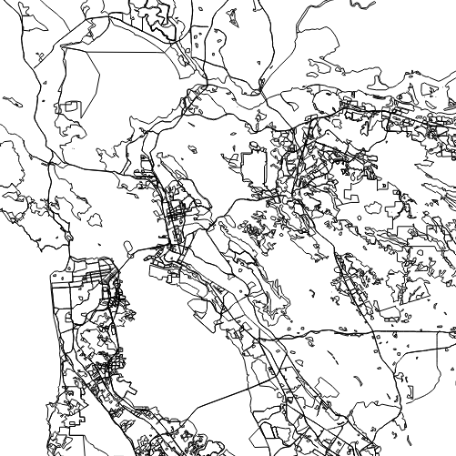

Let's Make a Map
with
Vector Tiles
Table of Contents
San Francisco
@MaptimeSFMeettime!
Your name & geolocation & what does “vector tile” mean to you? or (B) Your favorite gif?


Follow along
https://jhnklly.github.io/vector_tiles_tutorial
Questions?
Additional tips?
Interrupt me!
Goaltime!
- Learn: What can vector tiles do for me?
- Make: Code a vectile web map.
- Visualize: Make it data-driven.
What are vector tiles?
Vector-y!
- Not a static image/raster/bitmap
- Dynamic styling
- Interaction
- Animation
- Scale-Independent
- Vertices + Attributes

Tile-y!
http://a.tile.openstreetmap.org/0/0/0.png

http://a.tile.openstreetmap.org/18/41928/101333.png

What We'll Make


(Amos, head of recruiting.)
Mapsense.js
-
Open-source mapping library: https://github.com/mapsense/mapsense.js
-
Based on polymaps.js and D3.js
-
Unlimited basemap styles and possibilities.


Mapsense Data
-
Query, extract, and code with large public datasets,
such as OpenStreetMap and US Demographics -
Publish open data to the world 
styler.mapsense.co Great for designers. (And kids & grandparents too!)
bit.ly/1HhATiO OpenStreetMap POI comparisons
Vectile Geek Stuff
- topology
- shared boundaries
- smaller size
- no gaps or overlaps when simplified
Vectile Geek Stuff
- quantization: like "snap-to-grid" or "coordinate precision"
- delta-encoded: relative coordinates
- protobuf’d: binary
- zip’d: quicker transfer
[-122.41729335339737, 37.764892437675975] to [-122.4172505736351, 37.764881835836164] to [-122.41727739572524, 37.76488395620424]
[-122417293μ, 37764892μ] to [-43, 11] to [17, 21]
Paws 4 Questions

Under the Hood
{"type":"Topology","q":[4096,4096],"transform":{"scale":[2.6822090148960476E-6,2.119827344163744E-6],"translate":[-122.43164062500001,37.779398571318765]},"srid":"4326","objects":{"land":{"type":"GeometryCollection","geometries":[{"id":0,"properties":{"minz":0},"type":"MultiPolygon","arcs":[[[1432]]]}]},"landuse":{"type":"GeometryCollection","geometries":[{"id":4705353,"properties":{"minz":13,"sub_layer":"park","leisure":"park","name":"Jefferson Square"},"type":"Polygon","arcs":[[0]]},{"id":6721233,"properties":{"minz":13,"sub_layer":"park","leisure":"pitch"},"type":"Polygon","arcs":[[1]]},{"id":7380715,"properties":{"building":"yes","minz":15,"sub_layer":"building"},"type":"Polygon","arcs":[[2]]},{"id":7846397,"properties":{"name":"Cathedral of Saint Mary of the Assumption","building":"yes","minz":15,"sub_layer":"building","amenity":"place_of_worship"},"type":"Polygon","arcs":[[3,4,5,6,7]]},{"id":7915992,"properties":{"name":"Margaret S. Hayward Playground","minz":13,"sub_layer":"park","leisure":"park"},"type":"Polygon","arcs":[[8]]},{"id":8594947,"properties":{"building":"yes","minz":15,"sub_layer":"building","name":"State of California Building"},"type":"Polygon","arcs":[[9,1433,10,11,12],[13]]},{"id":8649879,"properties":{"building":"yes","minz":15,"sub_layer":"building"},"type":"Polygon","arcs":[[14],[15]]},{"id":8700533,"properties":{"name":"Kintetsu Mall","building":"yes","minz":15,"sub_layer":"building"},"type":"Polygon","arcs":[[16,17,18]]},{"id":9037911,"properties":{"name":"War Memorial Veterans Building","building":"yes","minz":15,"sub_layer":"building","amenity":"theatre"},"type":"Polygon","arcs":[[19,1434,20]]},{"id":9054515,"properties":{"name":"Cathedral Hill Plaza","building":"yes","minz":15,"sub_layer":"building"},"type":"Polygon","arcs":[[21]]},{"id":9098966,"properties":{"name":"Safeway 0995","minz":15,"sub_layer":"building","building":"retail"},"type":"Polygon","arcs":[[22,1435]]},{"id":9167882,"properties":{"minz":15,"sub_layer":"building","building":"apartments"},"type":"Polygon","arcs":[[23,1436]]},{"id":9371343,"properties":{"building":"yes","minz":15,"sub_layer":"building"},"type":"Polygon","arcs":[[24,1437,25]]},{"id":9820605,"properties":{"building":"yes","minz":15,"sub_layer":"building"},"type":"Polygon","arcs":[[26]]},{"id":10005073,"properties":{"building":"yes","minz":15,"sub_layer":"building"},"type":"Polygon","arcs":[[27,-7,28],[29],[30]]},{"id":10054102,"properties":{"building":"yes","minz":15,"sub_layer":"building"},"type":"Polygon","arcs":[[31]]},{"id":10068970,"properties":{"building":"yes","minz":15,"sub_layer":"building"},"type":"Polygon","arcs":[[32,33,34,35,36,37]]},{"id":10069784,"properties":{"name":"Miyako Mall","building":"yes","minz":15,"sub_layer":"building"},"type":"Polygon","arcs":[[38,39,40,41,42]]},{"id":10135953,"properties":{"name":"Kinokuniya Mall","building":"yes","minz":15,"sub_layer":"building"},"type":"Polygon","arcs":[[43,44,45,1438]]},{"id":10441598,"properties":{"name":"KRON
Under the Hood
Consume Vectiles
Produce Vectiles
Developer Resources
Steal this code.
First Map: Hello World
- http://www.sublimetext.com/2
- http://brackets.io/
- http://jsbin.com/
- emacs, vim, atom, others
1. HTML boilerplate + libraries
<!doctype html>
<html>
<head>
</head>
<body>
</body>
</html>
2. Add a Mapsense basemap
d3.select("body").append("div")
.attr("id","myMap")
.attr("style","height: 100%;");
var myKey = /* https://developer.mapsense.co/account/#signUp */;
var map = mapsense.map("#myMap")
.add(mapsense.basemap().apiKey(myKey));
Gimme the keys! developer.mapsense.co
3. No Step 3
End Slidetime. Begin Maptime!
Next:
- Add custom data to our basemap.
- Change the symbolization to reflect data values.
- Empower the end-user to control the visualization.
Keys: developer.mapsense.co
Codes: http://bit.ly/vectortime
Ideatime!
- Put Null Island on the map?
- Make an SF 311 browser?
- Drag & drop .csv to map?
- Natural Earth countries painted with their flag?
- Others?
https://jhnklly.github.io/vector_tiles_tutorial
@MaptimeSF
@mapsense
@jhnklly
john@mapsense.co